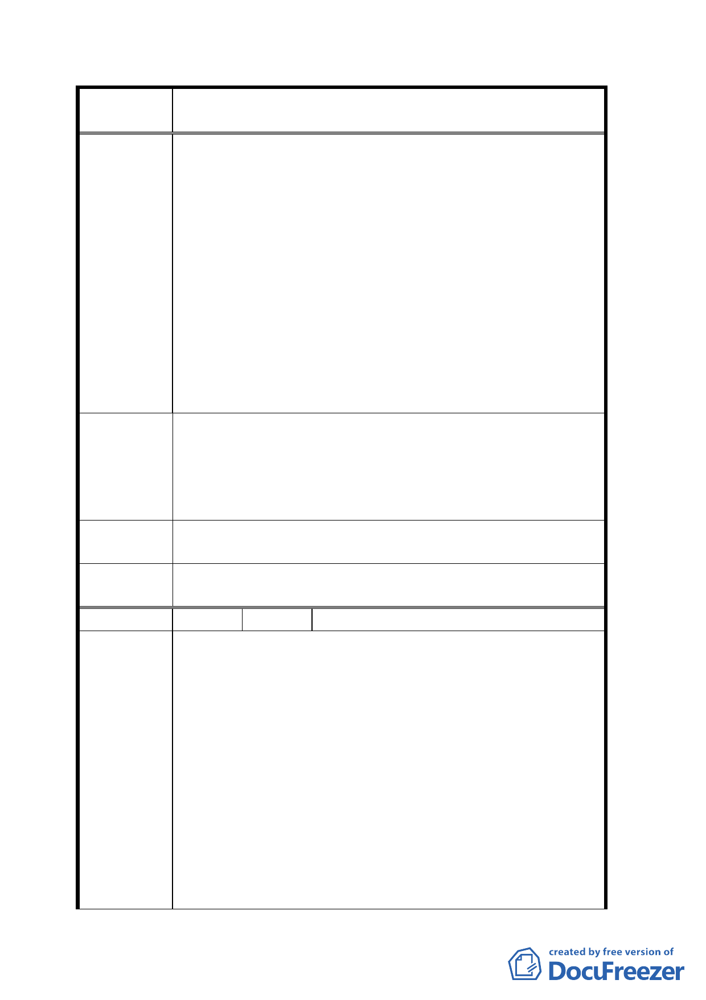

案
名
變更「修訂台北市主要計畫商業區（通盤檢討）計
畫案」內有關商業區變更回饋相關規定案
證。故商特基地變更後准其適用商業區建蔽率規定，
恰可提升商特基地改建意願，並可於低層規劃較多商
用面積。而「商特」基地若已繳交回饋申請變更為商
業區，強責基地過半作商業使用始准適用綜合設計獎
勵規定，對於「商特」基地而言實有不公，更阻滯「商
特」基地配合政策目標申請新、改建之意願。
二、 另查行政院於 93 年 3 月 31 日第 2884 次院會通過經
濟建設委員會會同各部會所研提的「服務業發展綱領
及行動方案」，秉持「開放、競爭」的思維模式，鬆
綁土地使用管制，將商業區土地使用項目由正面表列
改採負面表列，除不相容使用項目外，積極放寬商業
區使用彈性以支撐服務業發展平台，變更計畫中前述
規定與經建會政策目標背道而馳。
建請刪除商業區變更回饋相關規定案第二條「基地新、增、
改建需達 1/2 商業使用其建蔽率始得依商業區規定辦理」及
建 議 辦 法 第五條「基地新、改建需達 1/2 商業使用始得申請綜合設計
放寬」等規定。以建構公平、合理計畫內容，促進計畫目
標之達成。
專 案 小 組 依本案專案小組第四次及第六次審查會議決議已刪除所陳
審 查 結 論 二項規定，其開發則依現行規定辦理。
委員會議
決議
依專案小組審查結論辦理。
編 號 8 陳情人 周亦平（09430168800）
建議住址：臺北市延吉街 60 號 4 至 7 樓。
建議理由：
一、 華大賓館成立於 75 年，自 78 年起經市府列為輔導合
法化之旅館之一。
二、 延吉街 60 號原屬住四，現已改為商三特。華大賓館
所處建物，樓高七層，一樓店鋪、二樓二戶及三樓一
陳情理由
戶為住宅、三樓一戶及四至七樓均為華大賓館所有。
三、 依規定，必須二樓二戶及三樓一戶均非住宅使用或均
出具住戶同意書，華大賓館才可能符合條件，變更使
用。如此條件，實非陳情人所能控制。一般旅館業，
於第三種商業區原本允許設置，並未附加任何條件。
華大賓館所處地區，已變更為第三種商業區，依劃設
目的，華大賓館應得變更為一般旅館使用，似不應受
一六